Canvas Agent Bench
For an agent editing a visual document, a tool that measures for it is worth more than a better model.
The bench hands one agent loop a 2D canvas document and a brief — set this menu so every dish name fills two lines, fix this clipped headline, put this page in dark mode — through one of three tool surfaces: coordinate (move and resize by numbers), relational (place this below that, fit this text to its box) and document-as-code (read and rewrite the JSON). Each run gets either no feedback or a rendered screenshot plus a structured description. Deterministic checks score the result; a pass satisfies every one of them.
What we found
- A tool that computes beats estimating, feedback and a bigger model. Where the agent must know how wide a line of type is or where a line meets a curve, the surface with a measuring tool passed far more often at a fraction of the cost — confirmed, pre-registered, on two task families and three models from two providers.
- The tool does the work; the vocabulary decides whether it is used. Coordinate plus the measuring tool matched relational on text. On drawing, a small model offered the tool beside typed coordinates chose the numbers more often than not — and passed exactly when it chose the tool.
- Rewriting the document costs more the bigger it is, and the more often you edit it. Document-as-code's cost rose fastest with size, hit a wall at the model's output limit, and cost five times coordinate for a four-round editing session on Sonnet.
- Strong models close every exact gap, and harder tasks only delay it. Each geometry family that separated the surfaces stopped separating them one model generation up. Open-ended illustration did not separate them either: every vocabulary drew a good picture.
- Cost keeps separating the surfaces after pass rates stop. It is the outcome that held at every model strength, which is why this bench now reads cost per correct page first.
A measuring tool beats a bigger model
Each measurement task is a page with twelve or more pieces of text that must fill their space exactly: a title as large as it goes on two lines, a box hugging its text, a timeline spine running exactly as far as its entries. Getting one right means knowing how wide a string set in a given font at a given size is — something a model can only estimate.
The relational surface has fit_text: name the text, its box and the number of lines, and it sets the type as large as it goes. The other two surfaces can reach exactly the same page, but the agent has to pick the font size itself. Here is the same task done by the same model, GPT-5.6 Luna, with no feedback, once each way:
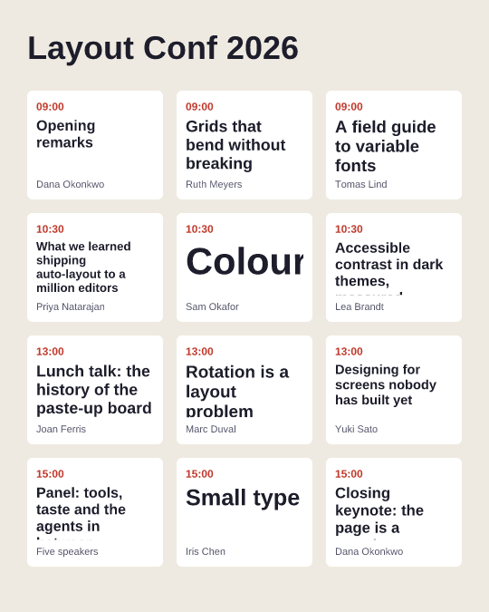
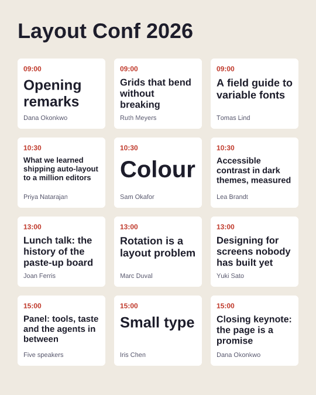
The confirmation ran each of the four tasks on all three surfaces, with and without feedback, three times, on two models: 144 runs, $13.51.
| Model | Relational | Coordinate | Document-as-code |
|---|---|---|---|
| GPT-5.6 Luna — passes | 22 / 24 | 5 / 24 | 0 / 24 |
| GPT-5.6 Luna — cost per pass | $0.018 | $0.13 | $0.37 |
| GPT-5.6 Terra — passes | 22 / 24 | 4 / 24 | 2 / 24 |
| GPT-5.6 Terra — cost per pass | $0.17 | $1.05 | $1.31 |
Cost per pass is a cell's total spend, failed runs included, over its passes, combined across tasks by geometric mean. Both tests were paired within task with a task-clustered bootstrap. Relational's lead in pass rate: +0.71 to +0.92, every interval clear of zero. Its cost per pass: 0.05 to 0.16 times the other surfaces', every interval clear of the 0.85 the pre-registration required.
The failures are near misses — the average score on the losing surfaces is 0.93 to 0.98 — but a page with one clipped title is not done. Seeing the page helps less than you might expect: a screenshot plus a structured description lifted coordinate and document-as-code from 2 to 9 passes out of 48, while the measuring tool got 44. And the bigger model doesn't close the gap either: Terra without fit_text passed less often than Luna with it, at nearly sixty times the cost per pass.
When the model can measure, the tool only changes the cost
Opus 5.5 passes the measurement tasks on every surface: it estimates, checks the feedback and corrects, or reaches for fit_text on its own. There the surface no longer decides whether the page gets made, only what it costs. Under a five-turn budget, coordinate cost 1.39 times as much per pass as relational (interval 1.15–1.66), document-as-code 1.18 times (not resolved).
On twelve other tasks — composing, repairing, restyling and arranging pages, and the animation prototypes — no surface was resolved cheaper in dollars than another (119 runs). The surfaces did differ in shape: document-as-code needed about a quarter of the tool calls, relational took the most turns (5.1, against 3.0 and 3.2), and the totals came out even. Feedback mattered for passing rather than for cost: 88.9% of runs passed with no feedback, 100% with any.
Drawing: the same effect, on another provider's model
The canvas can now be drawn on: a path is a line through points, straight or smooth, stroked, filled or tipped with arrowheads. The drawing task that held up is a diagram — a dozen ovals, diamonds, hexagons and pentagons, several turned at an angle, and a list of arrows that must each start and end exactly on a shape's drawn outline, to within 2 units. An oval's curve or a rotated pentagon's side is somewhere a model has to work out, not read off the document.
The relational surface has connect: name two shapes, and it finds where the line between their centres leaves one outline and meets the other. Coordinate and document-as-code can draw exactly the same arrows, and have to compute the ends themselves. Gemini 3.8 Flash, no feedback, the same diagram:
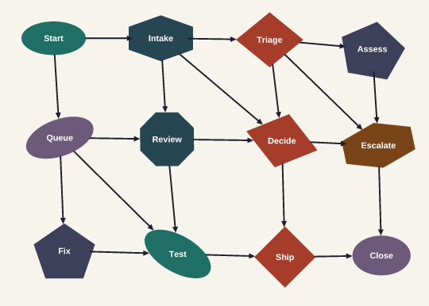
The confirmation ran four diagrams of different structure — a process chart, a hub and ring, a tree, a dense grid — on every surface, with and without feedback, three times: 72 runs, $18.53. The model was one that played no part in designing the tasks; every pilot had been on OpenAI models.
| Gemini 3.8 Flash | Relational | Coordinate | Document-as-code |
|---|---|---|---|
| Passes, four diagrams | 23 / 24 | 0 / 24 | 0 / 24 |
| Passes, the three not piloted | 18 / 18 | 0 / 18 | 0 / 18 |
| Cost per pass | $0.15 | $19.99 | $10.38 |
Relational's lead in pass rate: +0.96, interval 0.88–1.00, against both. Its cost per pass: 0.027 and 0.051 times the others', intervals well clear of the 0.85 required. A cell with no pass is charged twice its spend per pass, so those two ratios rest on that rule. Most of document-as-code's runs hit the 32,000-token output ceiling; re-run with no ceiling but the model's own, it finished six of eight and passed none, missing the outlines by 10 to 17 units as coordinate does.
Unlike text measurement, a stronger model did not close the gap in the pilots: GPT-5.6 Sol missed outlines on coordinate as Luna did, at ten times the price. Seeing the page did not close it either — a screenshot plus a description passed two of thirty-four coordinate and document-as-code runs across the pilots and the confirmation, against every relational run but one.
What a big document costs
Every other task is a page of a few dozen elements, where the three surfaces cost about the same to change one thing. The scaling set makes the same 28 edits — recolour twelve trees for autumn, move the sun and its rays, remove six birds, retitle it — in a landscape of 70 to 1,120 elements, growing only scenery nobody touches. Every run of every surface made every edit correctly, so what differs is the bill.
| Elements | 70 | 140 | 280 | 560 | 1,120 |
|---|---|---|---|---|---|
| Coordinate | $0.040 | $0.044 | $0.066 | $0.100 | $0.166 |
| Relational | $0.071 | $0.085 | $0.114 | $0.139 | $0.200 |
| Document-as-code | $0.075 | $0.100 | $0.205 | $0.341 | fails |
Gemini 3.8 Flash, no feedback, a 65,536-token ceiling (the model's own); two repeats averaged up to 560 elements, one at 1,120.
Document-as-code writes the whole document to change any of it, and output is the dearer token and is never served from a cache: its cost rose 4.5 times from 70 to 560 elements, against 2.5 and 2.0 for the surfaces that touch only what changes. At 1,120 elements one write of the document no longer fits in what the model can output with room to think: it spent 28 minutes and every token it had on a write that never closed, and left the painting as it found it. That wall is set by the model's output limit, not by the edit — a one-word change costs the same.
On Claude the wall sits further out: Sonnet 5.5 and Haiku 5.5 can output 128,000 tokens, and both finished the 1,120-element revision by rewriting it — writing about 100,000 tokens, at 2.6 to 3.3 times coordinate's cost. The next doubling is past every current model's limit.
Coordinate and relational rise too, more slowly, because every surface is handed the whole document and re-reads it each turn. A structured description after every turn makes that steeper for everyone — with one, coordinate's cost on Sonnet roughly doubled with each doubling of the painting. Showing it one element to a line instead of fully indented halved those tokens and took 18% off the scaling set's bill without changing what any surface was told.
The tool, or the vocabulary around it?
Relational wins both confirmed results through one tool — fit_text, connect — but it also has no x or y anywhere, so those results cannot say which did the work. An ablation surface, measured, keeps coordinate's vocabulary and adds only the two measuring tools, the very same objects relational uses. On Claude Sonnet 5.5 and Haiku 5.5:
| Passes | Coordinate | Measured | Relational |
|---|---|---|---|
| Haiku, text fitting (3 repeats) | 18 / 24 | 23 / 24 | 24 / 24 |
| Haiku, diagrams (3 repeats) | 3 / 24 | 10 / 24 | 24 / 24 |
| Sonnet, text fitting (1 repeat) | 7 / 8 | 8 / 8 | 8 / 8 |
| Sonnet, diagrams (1 repeat) | 4 / 8 | 7 / 8 | 8 / 8 |
For text, the tool is enough: given fit_text beside its numbers, coordinate passed as often as relational, at under half its own cost per pass. For drawing, the tool works every time it is used — every one of Haiku's ten measured passes used connect, and every one of its fourteen failures drew the arrows with typed coordinates instead. Offered numbers beside the tool, the smaller model chose the numbers more often than not. Relational has no numbers to fall back on, and used connect in every run. Take the typed coordinates away from measured as a way to draw — connect as the only line tool, everything else unchanged — and Haiku passed 24 of 24 as well.
Editing in rounds
Real editing is a series of notes on the same page. Two sessions hand over their instructions one round at a time — the next note arrives when the agent signs off the last — and end at exactly the page, and the checks, of a single-brief task. So the difference between the two is the price of being told in rounds.
| Session cost ÷ single-brief cost | Coordinate | Relational | Document-as-code |
|---|---|---|---|
| Haiku 5.5, 280-element revision in 4 rounds | 3.7× | 2.2× | 4.7× |
| Sonnet 5.5, the same | 2.6× | 2.6× | 3.9× |
| Haiku 5.5, diagram in 3 rounds | 1.2× | 1.7× | 1.2× |
| Sonnet 5.5, the same | 1.3× | 1.5× | 1.5× |
Every surface pays for the extra round-trips; document-as-code pays most on a big page, because it rewrites all 280 elements for every note. A Sonnet revision session cost $1.76 that way against $0.34 on coordinate — 104,000 output tokens against 2,700. On the diagram the rounds cost little, and relational stayed the only surface that reliably got it right.
Quality, judged
The lighthouse task has no exact answer — only a better and a worse picture. Sonnet 5.5 drew it three times on each surface, and a judge from another provider, GPT-5.6 Terra, compared every cross-surface pair in both orders: coordinate won 64% of pairs, document-as-code 58%, relational 28%.
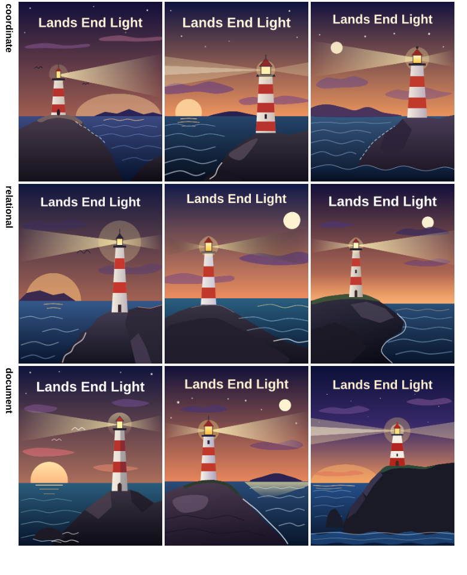
What the pages do show is the same ceiling from another side: on a strong model, free illustration does not separate the surfaces. Each vocabulary drew a good lighthouse.
Hard tasks are hard to write
The tasks were built to leave room — a target of about 30% passes on the strongest model — so that differences between surfaces could show. Three rounds of making them harder all ended the same way.
Geometry
Exact gaps, grids, insets and rotations are almost never missed: a strong model computes exact arithmetic exactly. Prototype pages built from shapes and gradients — a sunburst badge, a clock at ten past ten, a Bauhaus study made only of tangencies — were solved even by Luna, the cheapest model tested. Nine of its twelve misses there were the same constraint: a title set as large as it goes on one line. That pointed to measurement.
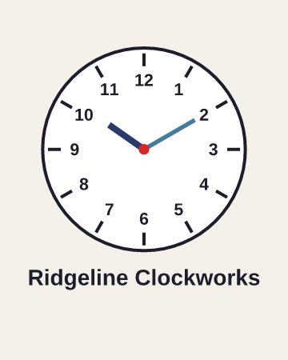
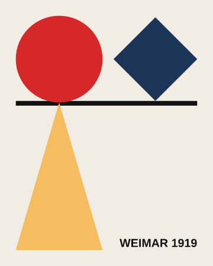
Measurement
So the hardest family was built around text the agent must measure without seeing it. It separates the surfaces on every model below the frontier, as above. Opus 5.5 passed all 24 pilot runs anyway.
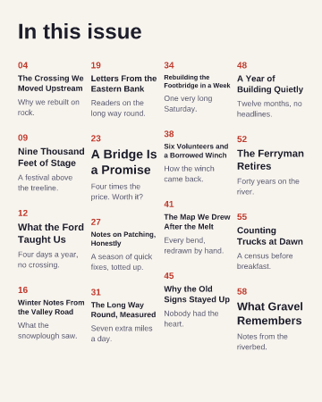
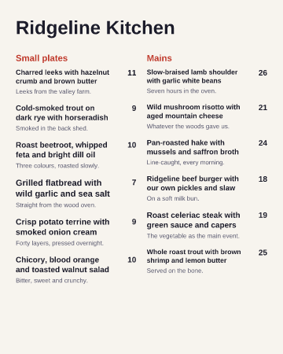
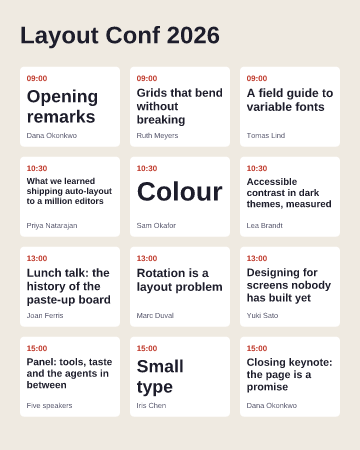
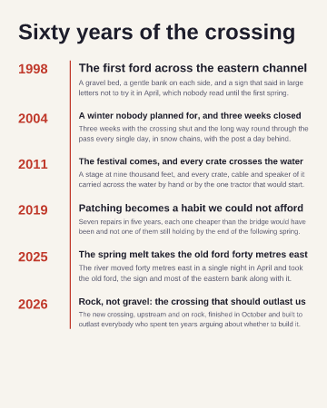
Motion
Then time. Elements gained an entrance animation, fade or fly in, and the checks sample the frames in between: nothing may cover text mid-flight, a button's label must stay inside the button, and everything must be at rest by a deadline. The three prototypes are built so that the obvious plan fails — half the sides an element could fly in from sweep it across text, and reading order drops each card onto the title of the one before.
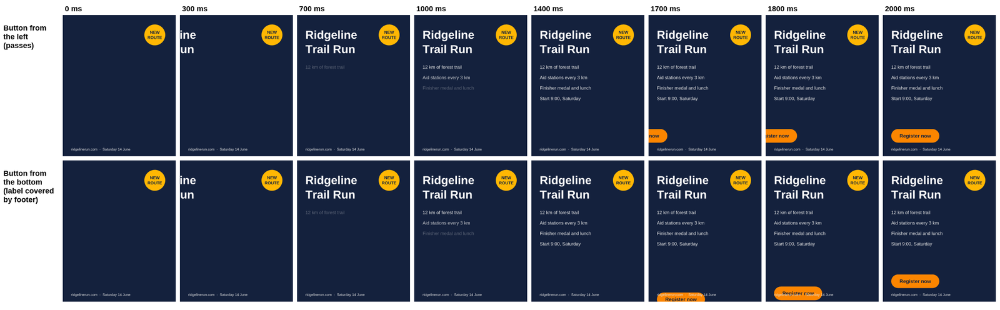
Opus 5.5, Sonnet 5.5 and Luna each passed all 18 runs. Models plan motion they cannot see as reliably as they compute geometry.
Writing tasks until the newest frontier model fails means writing tasks to defeat the model, not tasks people actually do. The useful signal is lower down: which tools let a cheaper model do what only the frontier does unaided.
Lessons for anyone designing agent tools
Give the agent a measuring tool
Anything the agent would otherwise have to estimate — text widths, line breaks, what fits — is worth a tool that computes it. It is the largest effect the bench found, larger than feedback and larger than a model step. Screenshots don't replace it: an agent that can see a title is clipped still has to guess the size that fixes it.
A missing tool looks like a weak model
The coordinate and relational surfaces once had no tool for the canvas background. Asked for dark mode, the agent noticed (“there's no tool to set the canvas background directly”) and painted a full-canvas dark rectangle. The page looks identical; it scored 56% instead of 100%, and a surface comparison would have blamed the vocabulary rather than the missing verb.
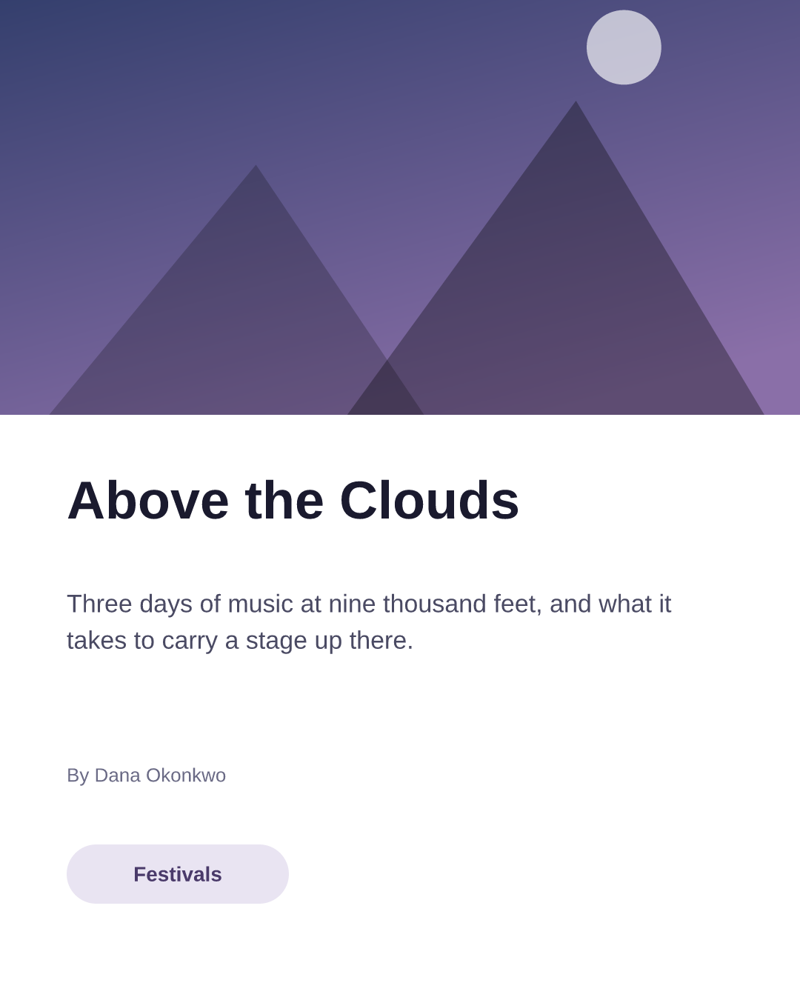
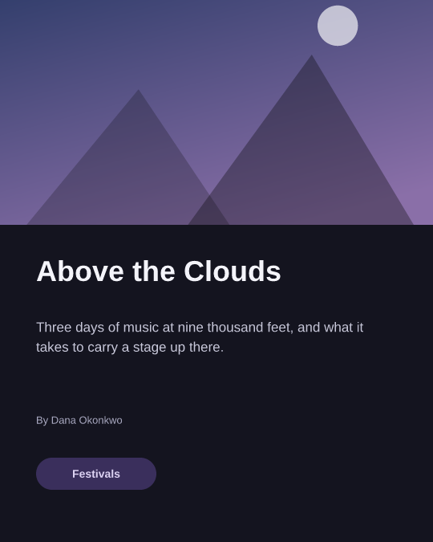
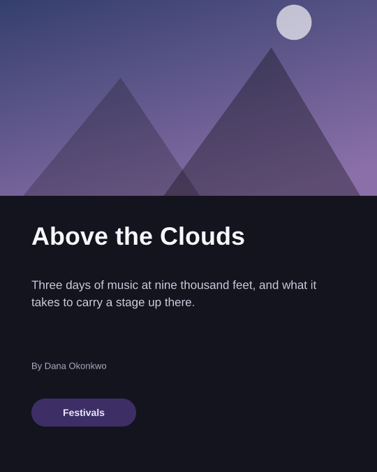
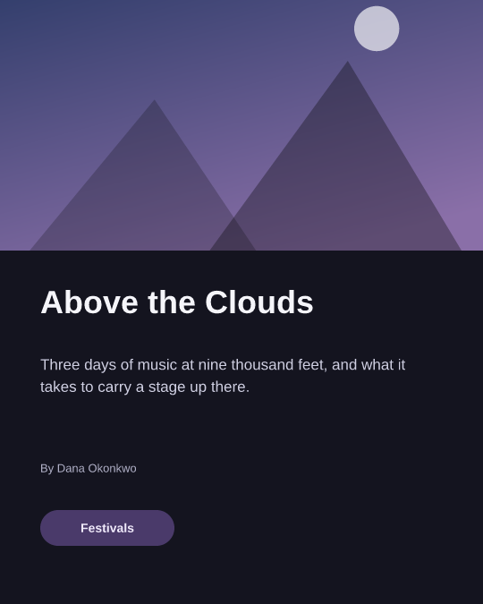
An agent that can't edit will rebuild
The relational surface once could size an element only when creating it. To fix a clipped headline, the agent deleted the headline and paragraph and made new ones. The page looks fine, but anything that tracks elements by identity — comments, links, history, here the checks — sees two elements gone. It scored 5%. Every surface now reaches the same set of documents, and a test proves it for each.
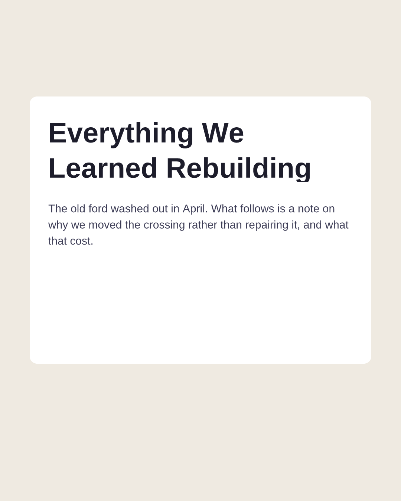
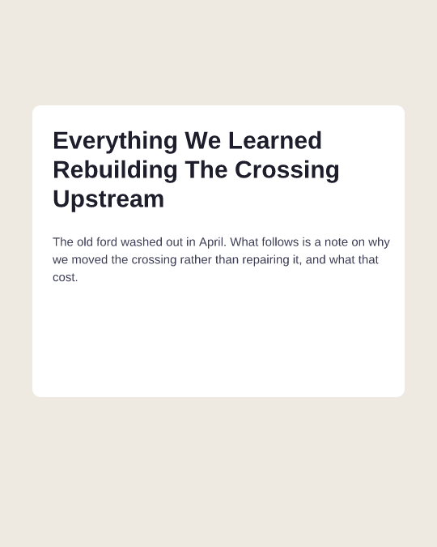
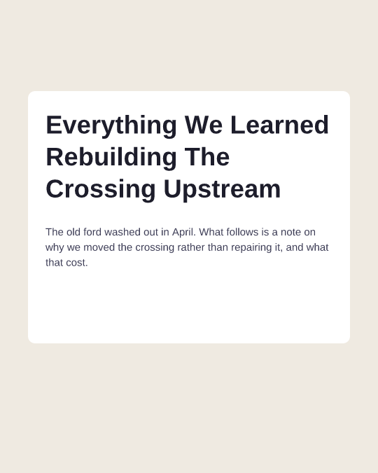
A budget is never neutral
A cap on tool calls penalises the surface that works in many small calls; a cap on turns penalises the one that checks its work between steps. Under a five-turn budget, relational on the GPT models fell from 15 of 16 passes to 4 of 16, because measuring and then checking takes turns. Decide which you are pricing before you cap it.
A cheap way to satisfy a check is a bug in the check
Shrink the type until it fits. Fade the shape covering the text. Carry the missing copy in a text element at opacity: 0. Each of these once satisfied a task without doing what its brief asked. Every one now has a test asserting it scores below the honest fix, and the honest fix has to reach 100%. Checks read glyph ink from the font rather than line boxes, and overlap is measured as hidden ink rather than raw area, because a headline sitting on a card is good design, not a defect.
Give the measuring tool, and take away the guess
A measuring tool only helps if it is used, and a weaker model given both a tool and the raw numbers will often type the numbers. Where a computed answer matters, the more reliable interface is the one that offers no way to guess.
Tell the agent what the harness already guarantees
The loop has always run a reply's tool calls in order, each seeing what the one before it did. Nothing said so, and the relational agent sent its calls one or two to a reply to watch each land — two to eight turns for identical edits, every extra turn re-sending the conversation. One sentence in the shared prompt took it to two turns in seven runs of eight.
Formatting is a tax on every turn
A document shown fully indented costs about twice the tokens of the same JSON one element to a line, and it is shown in the opening message and re-sent on every turn after. Nothing a model needs is in the indentation.
Try it
The live page lets you type a brief, watch the agent build it, and switch the tool surface mid-run: the document and conversation carry over, only the vocabulary changes. It runs a recorded replay without an API key. Six providers work through one agent loop on the Vercel AI SDK.
The surfaces are also published over WebMCP, screenshots included, so any WebMCP agent or eval harness can drive the canvas with no code from this repository in the loop.
npm install && npm run serve, then open localhost:5173. The README covers sweeps, cost estimates and the WebMCP host.